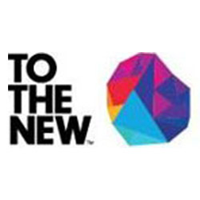

02 — Experience
Where I've made an impact
Data Engineer II

Amazon India (Fintech)
Gurugram, Haryana
Project: Fintech TDW • Team Size: 11
- Own the tax data platform for AWS-Global (15B+ records/month, $12B+ revenue, 15 seller-of-record countries) and US-Retail (30B+ records/month, $45B+ revenue, ~1B records/day at peak)
- Designed a Bronze → Silver → Gold pipeline architecture with backfill support and data completeness scoring; built the full stack independently from ingestion through reporting
- Manage 34 Airflow DAGs — 18 for Global (including 8 reconciliation DAGs with business rules) and 16 for US-Retail; handle revenue/tax reconciliation across OFA (AP, AR, GL), ATARs, and TAR
- Coordinate with multiple AWS accounts to establish internal connections for cross-account data processing
- Migrated legacy reporting to native AWS (Airflow + EMR + Redshift), improving monthly SLA from Day 8 to Day 5 and cutting infrastructure costs by 71%
- Built an archival framework that reduced Redshift query latency by 54%; delivered 9 QuickSight dashboards and real-time ETL monitoring, saving compliance teams ~1,200 hours/year
- Enforced security best practices: Secrets Manager credential rotation, least-privilege IAM policies, restricted prod console access, and CloudTrail logging for all manual interventions
Senior Data Engineer

To The New Pvt Ltd
Noida, Uttar Pradesh
- Worked with an auction client on trade-analysis workflows across multiple technology stacks
- Created initial onboarding documentation — was the first engineer from To The New assigned to this client
- Drove requirements gathering, planning, and a 6-month delivery roadmap single-handedly in collaboration with the customer
Associate Data Analyst (Data Engineer)
Optum Global Solution (UnitedHealth Group)
Noida, Uttar Pradesh
Project: Data Science Enablement Platform (DEEP) • Team Size: 24
- Built data pipelines to ingest data from multiple sources (DB2, Oracle, SQL Server, PostgreSQL, CSV/Excel) into the Big Data platform (HDFS/Hive)
- Developed a complete end-to-end automation framework for Analytics, Data Science, Hive, Python, and Java processes — scheduled execution with QC reports and automated mailers
- Managed 50+ processes and 30+ ingestion jobs on scheduled frequencies; built a single-screen monitoring framework with daily summary reports
- Applied Hive optimization techniques for faster query execution across the platform
- Built a Prod-to-NonProd data transfer pipeline with quality-check reports and automated notifications
- Created trigger-based scripts for on-demand job execution using Shell Scripting
- Cluster specs: 100 TB allocated, 750+ data nodes, 120 V-Cores, 2 edge nodes, Oozie scheduler. Daily ingestion: 5+ TB
System Engineer

Tata Consultancy Services Limited
Thane, Maharashtra
Project: TCS Analytics (ExaLogs) • Team Size: 15 • Role: Hadoop Developer
- Wrote and maintained Hive UDFs and UDAFs for complex business-logic transformations
- Worked across the full Hadoop ecosystem: Sqoop, Hive, Pig, Phoenix, HBase, HDFS, MapReduce, and Flume
- Developed an analytics application with Angular Charts and D3.js on the frontend and Java + PostgreSQL on the backend — adopted organization-wide for production deployment tracking
- Led a team of 5 associates working on similar technologies
- Implemented Oozie as the automation/scheduling tool for Hadoop — first adoption within the team
- Created flowcharts, solution documents, and communication frameworks for stakeholder updates
- Used JUnit for unit testing with Cobertura plugin for code coverage reporting